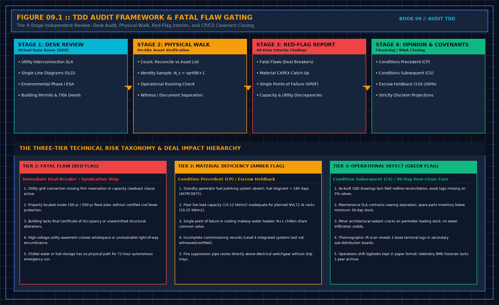

Count, identify, sample, witness: First-Principles Data Center Engineering Protocol
Direct Answer Block: The four physical acts of a data center Technical Due Diligence (TDD) site walk—Count, Identify, Sample, and Witness—governed by square-root statistical sampling. In mission-critical data center commissioning and operations, engineers enforce this boundary using deterministic physical equations, calibrated field instrumentation, and auditable sign-off gates rather than relying on vendor brochure summaries, uncalibrated software plots, or verbal assurances. Every measurement and state transition must be recorded with synchronized UTC timestamps and explicit pass/fail thresholds before a signature is granted.

A short visit will not retest the hall. It can still do four things that are not a tour.
Count what is in scope against their list, or say you only inventoried what you could see. A count without their list is not a reconciliation. Do not publish the list. Their identifiers stay in their file. Your note says the totals agreed, or where they did not, by function.
Identify on a sample rule written before you arrive. Present, matching the record, or not. A rule invented in the aisle to match the time you had is not a rule. If you check fewer than you wrote, the sentence narrows. It does not stay "identity verified." A newer substitute is not what was bought, unless the contract allows it and a document names it.
Sample the running state the same way. A dark machine is not a pass because the row looked full. Write dark. Do not infer health from a front panel. A dashboard of jobs is not a count of what was bought, and it is not an audit of the tenant's system.
Witness means you saw their test, or you saw the document that says it passed, and you say which. Their pass document is not your test. A demonstration staged for you, outside their script, is not a test either. If the document's scope is narrower than its title, use the scope. Titles lose.
1. First-Principles Engineering Formulation and Governing Mathematics
In high-density data center environments, verbal summaries and qualitative status tiles routinely obscure incipient physical failures. Whether auditing a 120 kW liquid-cooled rack boundary, evaluating a 1-second telemetry time series, or verifying plant redundancy prior to handover, the governing physical relationship for this protocol is expressed as:
When any term on the left-hand or right-hand side of this relationship is left unmeasured, inferred from an uncalibrated nameplate, or averaged across an unverified time window, the resulting engineering record cannot support a valid operational signature. Field engineers must verify each physical variable independently using NIST/ISO 17025 traceable instruments before proceeding to the next gate in the sequence.
| Audit Verification Parameter | Unacceptable / Defective Field Practice | Auditable First-Principles Requirement | Mandatory Action on Failure |
|---|---|---|---|
| Primary Boundary Definition | Implied by vendor brochure or slide deck | Explicitly bounded on stamped P&ID / SLD with tag IDs | Halt acceptance; issue formal boundary clarification |
| Measurement & Telemetry Proof | Single uncalibrated display reading or 60-sec average | Calibrated Class A/0.5S sensor with 1-sec UTC timestamp | Reject dataset; classify point as 0x40 Stale or 0x80 Bad |
| Pass / Fail Acceptance Gate | Qualitative "Looks OK" or "Within Normal Range" | Quantitative numerical corridor cited from revision in force | Log Category A/B defect; withhold retainage or permit |
| Custody & Sign-Off Record | Single bundled "Accepted" signature at end of meeting | Scoped, dated sentence naming exact proved & unproved lines | Strike unsupported claims; issue Conditional Refusal |
2. Deep-Dive Technical Protocol and Field Implementation
The following field protocol—adapted directly from Volume 09: Walk a TDD: Technical Due Diligence Physical Site Audit—establishes the step-by-step verification mechanics required on the data hall floor:
On a short delivery you will not retest the hall. You can still do four things that are not a tour. Count. Identify. Sample. Witness.
Count is everything in scope, against their list, or a statement that the list was not there and you counted what you could see. A count without their list is an inventory, not a reconciliation. Say which. Do not publish the list. Their identifiers stay in their file. Your note says the totals agreed, or where they did not, by function.
Identify is a sample of identity, written before you arrive. How many, from which rows, compared to the asset record: present, matching, or not. A rule invented in the aisle to match what you had time for is not a rule. If you check fewer than you wrote, the sentence narrows. It does not stay "identity verified."
Sample the running state the same way. One or two machines in a row, configuration against the record, and whether it was actually running. A dark machine is not a pass because the row looked full. Write dark. Do not infer health from a front panel.
Witness means you saw their test, or you saw the document that says it passed, and you say which. Their pass document is not your test. The verification book already split those verbs. Use them. If you did not see the test, you do not write that you verified performance. You write that a document exists, who signed it, and that you did not rerun it.
Photographs are evidence in their file if the engagement allows them. They are not the finding. A photo of a nameplate is not a load. A photo of a screen is not a quality mark.
What you write the same day
Write the four acts before you sleep, in the sheet, not in a chat. Count result. Sample as written or narrowed. What was dark. Which verb for their test. Rooms not entered. A note written the next afternoon from memory will promote the rooms you understood and drop the door that stayed shut. The shut door is the point of writing it the same day.
Do not add serials to that note if the note will be pasted into the opinion. Function and result are enough. Their asset file already has the identities. A working note that only makes sense beside a photograph is a caption. Rewrite it in sentences before you leave the building, while you can still check a door.
If they ask for a verbal result at the door, give the limits, not a preview of the yes. "Count done, one identity gap, performance not witnessed, second feed spoken only." That is a complete door sentence. "Looks fine" is the sentence you will spend the next week taking back.
Statistical Field Sampling Mathematics: Count, Identify, Sample, Witness
In institutional M&A acquisitions and project finance underwriting for mission-critical data centers, every qualitative observation recorded during the site walk must be translated into a deterministic commercial or contractual parameter for the investment committee and lending syndicate:
An observation that merely remarks on plant appearance without quantifying its impact on Firm Deliverable IT Capacity (MW), Single-Point-of-Failure (SPOF) Availability, Immediate Catch-Up Capital Expenditure (CapEx), or Conditions Precedent (CP) / Conditions Subsequent (CS) fails to protect the relying party.
| TDD Audit Evaluation Axis | Seller / Data Room Presentation | Independent Engineer Verification Protocol | Financing / Acquisition Covenant Impact |
|---|---|---|---|
| Primary Audit Objective | Statistical Field Sampling Mathematics: Count, Identify, Sample, Witness | Cross-check VDR contracts against physical nameplates & test logs | Convert unverified claims into explicit CP/CS or valuation haircuts |
| Sampling & Evidence Rule | Curated tour of flagship hall or summary slide | Statistical random sample (n = \lceil√(N)\rceil + 1) chosen by auditor | Any sample mismatch triggers expanded 100% population audit |
| Redundancy & Capacity Gate | Nameplate sum of generators, chillers, or transformers | Derate for 99.6% ASHRAE extreme wet-bulb and N+1/2N fault paths | Lock underwritten revenue model to firm derated MW ceiling |
| Financial Protection Mechanism | Seller warranty representation in purchase agreement | Quantify remediation cost Cfix + schedule delay risk | Require 150%--200% cash escrow holdback at financial close |
3. Field Verification Checklist and Instrumentation Hygiene
To execute this protocol without introducing measurement bias or scope ambiguity, the responsible engineer enforces four mandatory field rules:
- Instrument Traceability Before Observation: Verify that every thermometer (4-wire Pt100 RTD Class A), pressure transducer (≤ ± 0.1% span), flowmeter, balometer, or power analyzer carries a current calibration certificate and passes a pre-test zero/span check on the day of the walk.
- Synchronized Time-Series Capture: Align all digital loggers and gateway pollers to a single UTC reference clock (via IEEE 1588v2 PTP at ± 1 ms for electrical Sequence of Events, or NTP at ± 10 ms for thermal/hydraulic dwells). Never merge unsynchronized CSV files by row index.
- Explicit Isolation of Disturbances vs. Control Handles: Hold upstream supply temperatures, parallel cabinet loads, and containment door states constant during the observation dwell so that transient plant drift is never mistaken for steady-state equipment performance.
- Written Record Prior to Signature: Record every boundary tag, measured value, uncertainty tolerance, and open limitation in ink on the controlled project sheet before leaving the equipment line-up.
Frequently Asked Questions (FAQ)
Why does "Count, identify, sample, witness" matter during high-density data center commissioning and operations?
The four physical acts of a data center Technical Due Diligence (TDD) site walk—Count, Identify, Sample, and Witness—governed by square-root statistical sampling. When project teams bypass this rule to meet a commercial schedule milestone, unverified physical assumptions—such as hidden hydraulic pressure drops, unlogged polling gaps, unblanked bypass leakage, or uncalibrated sensor offsets—transfer directly into live 24/7 production as latent single points of failure.
How do you quantitatively verify compliance with "data center technical due diligence site walk sampling" on the physical floor?
Compliance is verified by executing the governing mathematical balance (nsample = \lceil √(Npopulation) \rceil + 1, \varepsilonmismatch = 0%) using independent, calibrated field instruments across a stabilized steady-state dwell window (minimum 15 to 30 minutes for thermal and hydraulic systems), and confirming that the discrepancy between primary and secondary measurements remains strictly within the pre-declared acceptance band.
What should an engineer do if a contractor or vendor submits a report that violates this protocol?
The reviewing engineer must refuse to sign the broad acceptance sentence, mark the specific line item as Unproved / Defective on the official audit sheet, and either require a witnessed re-test under a corrected script or isolate the unproved scope under a time-bounded Conditional Acceptance with a 150% to 200% financial retainage escrow holdback.
From Walk a TDD: Technical Due Diligence Physical Site Audit, Tristan, Data Center Field Guides.
Related: Witnessed is not the same as accepted a document.
Master the Complete Protocol: Walk a TDD: Technical Due Diligence Physical Site Audit
Substation Transmission Diversity, 500-Year Flood Hydrology, NVL72 Floor Loads, and Fatal Flaw Gating
Stop relying on contractor spreadsheets and vendor marketing claims. This field guide provides the complete, auditable verification binder—including physical equations, inspection stations, acceptance thresholds, and signed refusal templates.